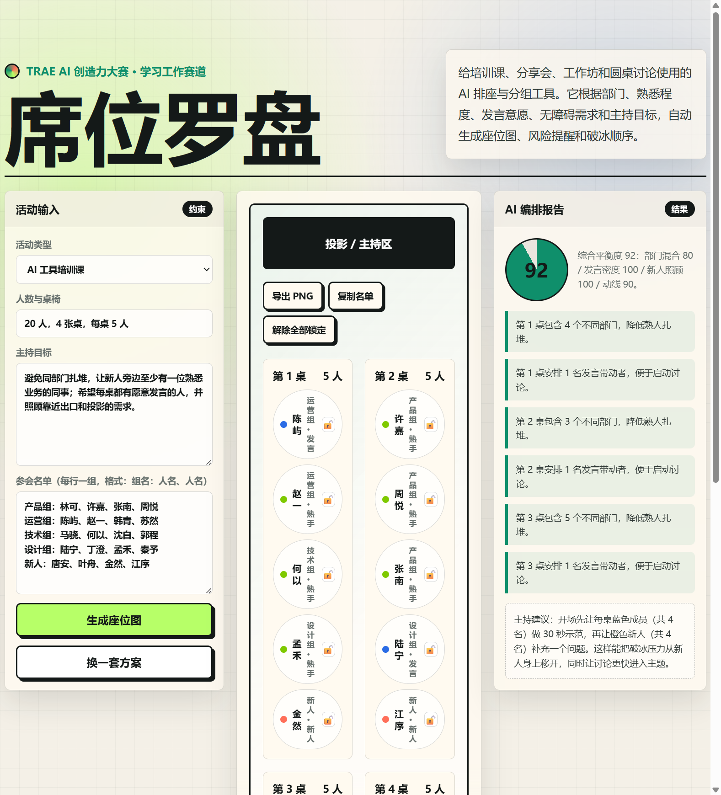

席位罗盘
把组织者"凭感觉排座"这件每次培训、工作坊都要做的体力活，变成可解释、可调整、可复盘的 AI 编排流程。一份名单进，一张带评分、风险提醒和破冰顺序的座位图出。
01作品介绍
"席位罗盘"是一个面向 培训课、分享会、工作坊、圆桌讨论 的 AI 排座与分组工具。组织者只需输入活动类型、人数桌椅、主持目标和参会名单，它就能自动生成一张带角色标记的座位图，并附上 平衡度评分、风险检查项 和 破冰主持建议。
它的核心主张是：排座不是体力活，而是 可以被解释、被调整、被复盘的编排决策。每一张桌子为什么这么排、哪一桌存在新人扎堆风险、主持人开场该先请谁发言——这些过去全凭经验判断的环节，"席位罗盘"都给出了可量化的依据。

02核心功能
作品围绕"输入—编排—呈现—调整—导出"五个环节组织，共六项核心功能：
①结构化名单解析
支持"组名：人名、人名"的自然文本输入，自动识别部门、推断角色（新人/发言带动者/业务熟手），无需手动打标签。
②三阶段约束编排
贪心算法分三轮求解：先按"人少的桌优先"均匀分散同部门，再保证每桌至少 1 名发言带动者，最后校验新人邻位有熟手。
③四维度平衡度评分
部门混合 35% + 发言密度 25% + 新人照顾 25% + 动线 15%，每个维度独立打分，加权得出综合分，评分随方案实时变化。
④风险检查与破冰建议
自动检测"第 N 桌新人比例偏高"等风险项并飘红提示；按活动类型生成差异化主持建议（复盘/共创/破冰各不同）。
⑤拖拽微调与锁定
座位可拖拽互换，换座后评分即时重算；关键人员可一键锁定，锁定后不可被拖动，避免重要角色被误调。
⑥一键导出
支持导出 PNG 座位图（html2canvas 截图，2 倍清晰度）和复制纯文本名单（按桌分组，含部门标注），方便分享与存档。
03使用流程
从打开页面到拿到一份可用的座位方案，组织者只需四步，全程在浏览器内完成，无需登录、无需后端：
填写活动约束
在左侧"活动输入"面板选择活动类型（培训课/复盘工作坊/破冰圆桌/共创会），填写人数与桌椅（如"20 人，4 张桌，每桌 5 人"），撰写主持目标。
粘贴参会名单
按"组名：人名、人名"格式粘贴名单，每行一组。系统自动解析部门归属并推断每个人的角色（新人组全员标记为需照顾，每组第一名视为发言带动者）。
生成并审视方案
点击"生成座位图"，中间画布渲染 4 张桌的座位图（彩色圆点标记角色），右侧报告区给出综合评分、维度明细、风险检查项和破冰主持建议。不满意可点"换一套方案"重新编排。
微调与导出
拖拽任意座位互换位置（评分实时重算），锁定不想被挪动的人员，最后点"导出 PNG"拿到座位图图片，或"复制名单"拿到纯文本分组清单，直接发到工作群。
整个编排流程的数据流如下，每一步都可解释、可追溯：
flowchart LR
A[活动类型/人数/目标] --> P[parseRoster 解析名单]
N[参会名单文本] --> P
P --> R[角色推断 新人/发言/熟手]
R --> S1[第一轮:均匀分散同部门]
S1 --> S2[第二轮:每桌补1名发言者]
S2 --> S3[第三轮:新人邻位校验]
S3 --> G[渲染座位图]
G --> C[四维度评分]
C --> K[风险检查项]
C --> M[破冰主持建议]
G --> D[拖拽微调/锁定]
D --> E[导出PNG/复制名单]
04创新点
相比"用 Excel 手动排"或"随机分组工具"，"席位罗盘"在三个方向上做了差异化：
① 把排座变成"可解释的编排决策"
常见的分组工具只给结果不给理由。"席位罗盘"每个方案都附带 四维度评分明细（部门混合 80 / 发言密度 100 / 新人照顾 100 / 动线 90）和 逐条风险检查项。组织者能清楚回答"为什么第 3 桌这样排"——因为这样排让 4 张桌都至少有 3 个不同部门、每桌都有发言带动者、新人被均匀打散。
② 角色化编排，而非随机打散
不是简单"同部门不许扎堆"，而是识别出 发言带动者、新人、业务熟手 三类角色后做定向约束：每桌保证至少 1 名发言者便于启动讨论，新人邻位必须有熟手降低破冰压力。这种"角色感知"是培训场景特有的，通用分组工具做不到。
③ 人工微调与 AI 编排共存
真实排座几乎总要手动微调（把某领导挪到第 1 桌、锁定某人不挪动）。"席位罗盘"支持 拖拽换座 + 锁定 + 实时重算评分，让 AI 给初始方案、人做最终决策，而不是"要么全用 AI 要么全手动"的二选一。换座后评分立即更新，组织者能直观看到微调对整体平衡度的影响。
| 能力 | Excel 手动排 | 随机分组工具 | 席位罗盘 |
|---|---|---|---|
| 同部门分散约束 | 纯靠人眼 | 支持 | 支持 |
| 角色感知（发言者/新人） | 无 | 无 | 支持 |
| 平衡度评分 | 无 | 无 | 四维度 |
| 风险提醒 | 无 | 无 | 逐条飘红 |
| 破冰主持建议 | 无 | 无 | 按活动类型 |
| 拖拽微调 | 支持 | 无 | 支持 |
| 一键导出 | 手动复制 | 无 | PNG+名单 |
05实用价值
"席位罗盘"瞄准的是"学习工作"赛道里一个 高频却长期被低估 的痛点——分组讨论的排座质量直接决定讨论质量，但组织者通常只能凭感觉花 20 分钟排一张表，还排不明白。
对组织者：省时间、有底气
20 人的活动，手动排座加反复调整通常要 15-30 分钟，而"席位罗盘"30 秒出方案、带评分有依据。面对"为什么把我和新人分一桌"这类质疑时，组织者能拿出 评分明细和风险检查项 作为解释，而不是"我觉得这样比较好"。
对参会者：体验更顺
每桌都有发言带动者意味着讨论不会冷场；新人旁边有熟手意味着破冰压力被分担；同部门被打散意味着不会陷入"内部小会"。这些编排约束最终都会转化为 更高质量的讨论和更舒适的参与体验。
对组织：可复盘
导出的 PNG 和名单可以归档，下次同类活动可以直接复用方案或对比改进。评分机制让"这次排得好不好"有了量化指标，而不是活动结束就模糊遗忘。
06完成度说明
作品是一个 单文件 HTML（含内联 CSS 与 JS，仅依赖 html2canvas 一个 CDN 用于导出 PNG），无后端、无数据库、无需登录，双击即可在浏览器运行。当前完成度如下：
已实现并经浏览器实测验证
- 输入真正参与生成：parseRoster 解析名单、parseCapacity 解析桌椅，arrange 三阶段贪心求解，不再是预设硬编码方案。
- 数据自洽无重复：实测 20 人名单生成 4 桌 × 5 人，unique===20、hasDup===false，每桌 1 名发言带动者、1 名新人均匀分散。
- 评分动态计算：综合评分随方案变化（实测 92 分：部门混合 80 / 发言密度 100 / 新人照顾 100 / 动线 90）。
- 拖拽换座 + 锁定：HTML5 拖拽 API 实现，锁定后不可拖动，换座后评分实时重算。
- 导出 PNG 与名单：html2canvas 截图下载，剪贴板复制名单（含 execCommand 兜底）。
已知简化项（不影响 Demo 可用性）
- "换一套方案"时锁定人员的桌位会随重排变化（锁定集合仍保留，即仍不可拖拽，但桌位会变）——后续可改为"锁定人员固定原桌、只重排其余人"的增量分配。
- 角色推断基于"新人组第一名"等启发式规则，尚未支持手动标注发言意愿——后续可加角色手动覆写。
- 动线维度暂以基准分 90 计，尚未接入"靠近出口/投影"的真实位置约束——后续可在座位图上标注物理位置。
state.plan.flat() 验证，20 人无重复、4 桌均匀各 5 人、每桌 1 发言 + 1 新人、评分 92，无 JS 报错。
07后续扩展方向
当前版本验证了"可解释排座"的核心闭环，后续可沿四个方向扩展：
→增量重排与锁定优先
支持"锁定人员固定原桌位、只重排其余人填空"，让"换一套方案"真正尊重组织者的关键决策。需要把 arrange 改造为支持 lockedPositions 参数的增量分配。
→角色手动标注
在名单解析后允许组织者手动覆写角色（把某人从熟手改成发言者、标记某人为需无障碍照顾），并支持"靠近出口/投影"等物理位置约束接入动线评分。
→历史方案复盘
用 localStorage 存储历次方案与评分，支持同类活动横向对比（"这次比上次新人照顾分高了 15 分"），让排座真正"可复盘"。
→多人协作与日程联动
接入日历 API 自动拉取参会名单，支持多人在线协同微调同一张座位图，导出可直接同步到会议邀请。
更远期可以演进为"学习工作场景的编排中台"——排座只是入口，后续可延伸到 分组任务分配、讨论时间盒、发言轮次调度 等更广义的"学习工作编排"。
08开发过程说明
作品基于一份初版 Demo 迭代而来，开发过程体现了"先诊断、再重构、后验证"的工程节奏：
阶段一：诊断初版问题
初版 Demo 视觉完成度高（Neo-brutalism 风格、三栏布局、彩色角色标记都到位），但代码层面存在三个硬伤：
- 输入与编排脱节：左侧表单是装饰性的，点击"生成座位图"只切换 3 套预设方案，评分和建议都是硬编码文本。
- 预设数据有 bug：同人在同一套方案中重复出现，22 个不重复名额对不上"24 人 4×6"的设定。
- 座位只读：无法拖拽微调、无法锁定、无法导出，"可调整、可复盘"只是 slogan。
阶段二：重构核心逻辑
针对三个问题逐一重构，按优先级推进：
- 修数据 bug：彻底删除 plans 硬编码，改为算法生成，并在分配后用 Set 校验每人恰出现一次。
- 接通输入：新增 parseRoster / parseCapacity 把输入框文本变成结构化数据，arrange 用三阶段贪心求解（均匀分散 → 补发言者 → 新人邻位校验）。
- 加完成度：HTML5 拖拽换座、锁定按钮、html2canvas 导出 PNG、剪贴板复制名单、评分与风险项动态计算。
阶段三：浏览器实测验证
重构后启动本地服务器、用浏览器打开，通过控制台执行 state.plan.flat() 做数据完整性校验，并修复了三个实际跑出来的问题：
- JS 语法错误：字符串里的中文引号被解析成英文双引号导致字符串提前终止（"做得好/做得差"报错），改为单引号包裹并替换为书名号。
- 分配不均：第一轮轮询逻辑 + 第二轮"借 blue"会移动人数导致 6/3/5/6 不均匀，改为"优先填人最少的桌"+"交换而非移动"保证均匀。
- 评分偏低：发言密度公式要求每桌 2 个 blue 才满分不合理，改为"每桌 1 个即满分"。
开发工具与方法
全程在 TRAE 中完成：用 TRAE 读取与分析原 index.html、用 TRAE 重构算法与交互逻辑、用 TRAE 内置浏览器启动本地服务器并实测验证、用 TRAE 控制台做数据完整性校验。TRAE 把"读代码—改代码—跑代码—验代码"四步闭环在同一个工作流里完成，这是这次迭代能在短时间内从"视觉 Demo"推进到"可用工具"的关键。